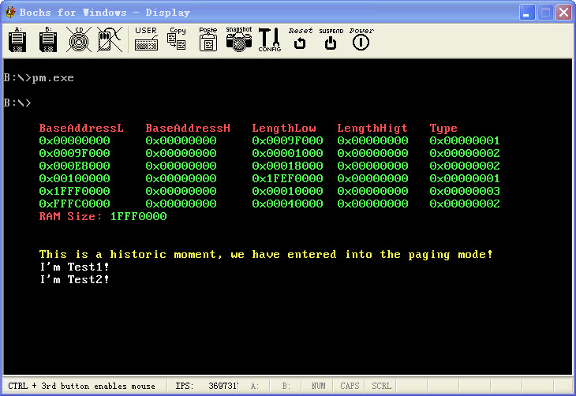

保护模式12:将一个线性地址映射到不同的物理地址上
文章目录
这篇还是上一篇的加强版. 上一篇我们漏说了很多东西, 包括我们在内存中使用了4M+4K的内存来存放页目录和页表. 这肯定是有问题的. 不行的. 那么我们应该动态的获取系统内存分配页表大小. 另外上一篇虽然对0b8000h做了下映射, 估计还是不过瘾.因为数据映射了下, 而且是没有开启分页之前的, 我们应该再接再厉. 将代码也可以随便映射..
关于这个分页机制的话, 上一篇已经说的比较清楚了, 这里不再罗嗦. 主要上一篇我们总共分配了4M+4K的内存, 这篇我们动态的获取内存大小. 那么就可以动态改动页表的大小了, 注意了. 这里可以动态修改页表的数量, 但是页目录是动不得的, 必须给4K. 我刚开始给页目录也动态的搞一下. 结果老是出错!
其他就好像没有什么问题了.. 这篇代码也不算复杂了, 相对前面的来说! 所以这里我主要说说代码的逻辑.当然, 上来首先获取了本地内存的大小. 这个是调用15h中断搞定的. 看截图上打印出来的就知道, 我用的Bochs虚拟出来的内存是512的, 基本有510M是可以给OS使用的. 然后把获取到的内存存放在dwMemSize变量中. 然后跳入保护模式..
我这里不和以前一样搞了, 搞那么多得段太麻烦了. 直接使用一个全局的数据段, 宽度4G, 一个代码段宽度4G, 一个堆栈段4G.用起来多舒服.. 我看Windows也是这么搞的嘛.. 然后进入保护模式以后直接从16过渡段跳到32位段. 然后开始搞分页.
分页的话. 还是和上一篇一样先初始化页目录, 页目录根据实际内存填写, 剩下的为NULL. 然后填写页目录, 页目录的话也是根据实际内存填写的. 这样就可以节约很多内存了.. 将所有的线性地址映射到等同的物理地址上. 然后单独修改0b8000h将其映射到线性地址0处.. 打印了一个字符串..
然后Copy了两段代码分别搞到100000h和102000h处. 然后调用100000h的函数, 这个没有撒稀奇的, 主要是下面. 我们修改页表将100000h处的线性地址映射到102000h处的物理地址上. 这样我们再次调用100000h的函数就调用到另外一个Test2函数了. 非常暴力!
还是和以前一样. 有图有真相!
http://www.joenchen.com/JoenTools/PageTest.rar

;============================================================================ ;演示保护模式下分页机制, 所有的线性地址对应物理地址 ;编译选项请参见 makefile TAB = 8 ;============================================================================ .686p Include pm.inc option casemap:none PageDirBase equ 200000h ; 页目录开始地址: 2M Stack_Len equ 300000h ;堆栈段开始地址 PageTblBase equ 201000h ; 页表开始地址: 2M+4K Test1Base equ 100000h ;测试任务1的地址 Test2Base equ 102000h ;测试任务2的地址 ;============================================================================
GdtSeg Segment use16 ;全局描述符表 ; ;段基址 ;段界限 ;属性 Dummy: Descriptor 0, 0, 0 ;空的描述符 Normal: Descriptor 0, 0ffffh, DA_DRW ;规范段描述符 g_DataDesc: Descriptor 0, 0fffffh, DA_DRW or DA_LIMIT_4K ;全局4G数据段 g_CodeDesc: Descriptor 0, 0fffffh, DA_C or DA_32 or DA_LIMIT_4K ;32位全局代码段 g_StackDesc: Descriptor 0, 0fffffh, DA_DRW or DA_32 or DA_LIMIT_4K ;32位全局堆栈段 g_CodeTempDesc: Descriptor 0, 0ffffh, DA_C ;非一致代码段16位 GDTLen equ $ - GdtSeg ;GDT长度 ;—————————————————————————- GDT_Ptr word GDTLen-1 ;VGDT dword 0 _RegSp word ? ;用于保存SS:SP _RegSs word ? ;—————————————————————————- SzString byte “This is a historic moment, we have entered into the paging mode!”, 0 SzMemInof byte “BaseAddressL BaseAddressH LengthLow LengthHigt Type”, 0 SzMemSize byte “RAM Size:”, 0 SzTest1 byte “I’m Test1!”, 0 SzTest2 byte “I’m Test2!”, 0
Buf byte 256 dup (0) dwStMemSize dword 0 dwPageDirSize dword ? ;页目录大小 dwPageTblSize dword ? ;页表大小 dwMemSize dword 0 ;系统内存大小 ;—————————————————————————- NormalSelector equ Normal - GdtSeg ;规范段选择子 g_DataSelector equ g_DataDesc - GdtSeg ;全局数据段 g_CodeTempSelector equ g_CodeTempDesc - GdtSeg ;临时代码段选择子 g_StackSelector equ g_StackDesc - GdtSeg ;全局堆栈段 g_CodeSelector equ g_CodeDesc - GdtSeg ;全局32位代码段 GdtSeg Ends ;============================================================================ ;执行分段工作 ;============================================================================ CodePageSeg Segment use32 ;—————————————————————————- ;显示一个字符串 ShowString Proc uses esi edi _lpStr:dword, _dwCoord:dword, _dwStringLen:dword
mov esi, \_lpStr
mov edi, \_dwCoord
cld
mov ecx, \_dwStringLen
@@: lodsb mov ah, 0eh stosw loop @b ret ShowString Endp ;—————————————————————————- Test1 Proc ;测试任务1
mov esi, GdtSeg
shl esi, 4
add esi, offset SzTest1
mov ecx, sizeof SzTest1
mov edi, 16 \* 160 + 5 \* 2 ;16行5列
@@: lodsb mov ah, 0fh stosw loop @b ret Test1Len equ $ - Test1 Test1 Endp ;—————————————————————————- Test2 Proc ;测试任务2 mov esi, GdtSeg shl esi, 4 add esi, offset SzTest2 mov ecx, sizeof SzTest2 mov edi, 17 * 160 + 5 * 2 ;16行5列
@@: lodsb mov ah, 0fh stosw loop @b ret Test2Len equ $ - Test2 Test2 Endp ;—————————————————————————- PageTest Proc ;分页测试
xchg bx, bx
;—————————————————————————- ;复制两段代码到不同的地址上, 用于做页映射演示 mov esi, CodePageSeg shl esi,4 add esi, offset Test1 mov ecx, Test1Len mov edi, Test1Base rep movsb
mov esi, CodePageSeg
shl esi, 4
add esi, offset Test2
mov ecx, Test2Len
mov edi, Test2Base
rep movsb
;—————————————————————————- mov eax, Test1Base call eax ;调用Test1 ;—————————————————————————- ;求的Test1所在的地址, 然后修改为Test2的映射 mov esi, Test1Base shr esi, 12 and esi, 3ffh ;10BIT 1111111111 shl esi, 2 ;页表一个项是4字节 add esi, PageTblBase
mov eax, Test2Base
or eax, PG\_P or PG\_USU or PG\_RWW
mov dword ptr \[esi\], eax ;将Test2的页写入Test刚对应的页
mov eax, cr3 ;刷新cr3
mov cr3, eax
;—————————————————————————- ;神奇的事情发生了, 居然会调用同一地址, 转到了不同的位置上 mov eax, Test1Base call eax ret PageTest Endp ;—————————————————————————- InitPage Proc local _dwDataBase:dword
mov eax, g\_DataSelector
mov ds, ax
;—————————————————————————- ;这里根据内存大小来分配页表, 就不用占据4M内存了 mov ebx, 400000h ;4M = 4096 * 1024一个页表的大小
mov eax, GdtSeg
shl eax, 4
mov dword ptr ss:\[\_dwDataBase\], eax
lea ecx, dwMemSize
add eax, ecx
mov esi, dword ptr \[eax\] ;esi-->内存大小
mov eax, esi ;eax=内存大小
cdq
div ebx
or edx, edx
jz @f
inc eax ;如果有余数就再增加一个页表
@@: mov ecx, _dwDataBase add ecx, offset dwPageDirSize mov dword ptr ds:[ecx], eax ;存放页目录数 ;—————————————————————————- ;为了简单, 所有的线性地址对应物理地址, 这里初始化页目录, ;虽然页表可以动态分配, 但是页目录还是固定的4K push ds pop es mov edi, PageDirBase
mov ebx, eax
mov ecx, eax
cld
mov eax, PageTblBase or PG\_P or PG\_USU or PG\_RWW;属性:可读可写的用户页目录
@@: stosd add eax, 4096 loop @b ;—————————————————————————- ;初始化页表(1K个, 4M内存空间), 页表之间的跨度是4096个字节, 也就是1000h ;因为线性地址的低12位的索引的最大限度就是4096, 所以跨度是这样的. ;这里根据实际的内存大小初始化页表 mov eax, _dwDataBase add eax, offset dwPageDirSize mov eax, dword ptr ds:[eax]
mov ebx, 1024
mul ebx
mov ecx, eax ; PTE个数 = 页表个数 \* 1024
mov eax, \_dwDataBase
add eax, offset dwPageTblSize
mov dword ptr ds:\[eax\], ecx ;存起来, PTE个数
mov edi, PageTblBase
mov eax, PG\_P or PG\_USU or PG\_RWW
@@: stosd add eax, 4096 loop @b ;—————————————————————————- ;将物理地址b8000h映射到线性地址000000h上面, 一般修改映射都是修改页表 mov esi, PageTblBase
mov ecx, 0b8000h
or ecx, PG\_P or PG\_USU or PG\_RWW ;属性:可读可写的用户页目录
mov dword ptr ds:\[esi\], ecx
;—————————————————————————- ;开启分页 mov eax, PageDirBase ;装载页目录基址 mov cr3, eax
mov eax, cr0
or eax, 80000000h ;开启分页
mov cr0, eax
;—————————————————————————- ;打印一个字符串, 向线性地址0地址写, 写到了b8000h处 mov esi, _dwDataBase add esi, offset SzString mov edi, 15 * 160 + 5 * 2 ;11行5列 Invoke ShowString, esi, edi, sizeof SzString ;—————————————————————————- call PageTest ;分页测试 ;—————————————————————————- ;返回实模式 Jmp32 g_CodeTempSelector, _GoToProtect InitPage Endp CodePageSegLen equ $ - CodePageSeg ;长度 CodePageSeg Ends ;============================================================================ ;16位段, 由实模式跳入 ;============================================================================ g_Code16Seg Segment use16 _GoToProtect Proc ;返回实模式 mov ax, NormalSelector mov fs, ax ;规范选择子 mov es, ax mov ds, ax mov ss, ax
mov eax, cr0 ;关PE位, 进入实模式
and al, 0feh
and eax, 7fffffffh ;关分页, 进入实模式
mov cr0, eax
;刷新段选择子缓冲区, 退回实模式
Jmp16 <seg StartCodeSeg >, < offset \_RealProtect >
_GoToProtect Endp ;—————————————————————————- _ProtectEntry Proc ;实模式跳入入口
mov ax, g\_StackSelector
mov ss, ax
mov esp, Stack\_Len ;32位段
;16位-32位执行分页\\
mov eax, g\_CodeSelector
push eax
mov eax, CodePageSeg
shl eax, 4
lea ecx, InitPage
add eax, ecx
push eax
byte 66h
retf ;通过retf转换到32位段
;Jmp16 g\_CodePageSelector,\_InitPage
;—————————————————————————- _ProtectEntry Endp g_Code16Seg Ends ;============================================================================ ;起始代码段初始化保护模式的各个结构, 然后跳入保护模式 ;============================================================================ StartCodeSeg Segment use16 _InitGdt Proc uses es ;初始化全局描述符表
xor eax, eax
mov ax, GdtSeg
mov es, ax ;es-->全局描述符表
;—————————————————————————- shl eax, 4 mov dword ptr es:[GDT_Ptr+2], eax ;初始化VGDT描述符 ;—————————————————————————- xor eax, eax mov ax, g_Code16Seg ;初始化十六位的代码段 shl eax, 4 mov word ptr es:[g_CodeTempDesc+2], ax ;段基址低位 shr eax, 16 mov byte ptr es:[g_CodeTempDesc+4], al ;段基址高地址低位 mov byte ptr es:[g_CodeTempDesc+7], ah ;段基址高地址高位 ;—————————————————————————- lgdt fword ptr es:[GDT_Ptr] ;装载GDT ;—————————————————————————- ret _InitGdt Endp ;;将al中的数字转成ASCII加上显示属性并在EAX中返回 _HexToAscii Proc uses ebx
mov bl, al
and al, 0fh
add al, 90h
daa
adc al, 40h
daa
mov ah, 0ah
shl eax, 16 ;转换低位
mov al, bl
shr al, 4
and al, 0fh
add al, 90h
daa
adc al, 40h ;将高位转成ASCII
daa
mov ah, 0ah ;属性
ret
_HexToAscii Endp ;============================================================================ ;显示一条信息_lpStr:字符串首地址 ;_dwXY开始显示地址 ;============================================================================ _PrintMessage Proc uses esi edi _lpStr:dword, _dwXY:dword
mov esi, \_lpStr
xor ecx, ecx
;—————————————————————————- @@: mov al, byte ptr ds:[esi] inc esi inc ecx or al, al jnz @b ;ecx == 字符串长度 dec ecx ;—————————————————————————- mov esi, _lpStr mov edi, _dwXY @@: lodsb mov ah, 0ch ;属性 stosw loop @b ret _PrintMessage Endp ;============================================================================ ;换行, _dwValue传递当前的行列号, 计算好在Eax中返回下一行开始 ;============================================================================ _PrintLn Proc uses ebx _dwValue:dword mov eax, _dwValue mov bl, 160 div bl and eax, 0FFh inc eax mov bl, 160 mul bl ret _PrintLn Endp ;—————————————————————————- ;eax要显示的Int类型值, es:edi指向需要显示的位置 _ShowInt Proc uses ebx ;显示一个Int类型的值
mov ebx, eax
shr eax, 24
call \_HexToAscii
stosd
mov eax, ebx
shr eax, 16
call \_HexToAscii
stosd
mov eax, ebx
shr eax, 8
call \_HexToAscii
stosd
mov eax, ebx
call \_HexToAscii
stosd
ret
_ShowInt Endp ;—————————————————————————- _GetMemSize Proc uses es ds ;获取内存大小
;—————————————————————————- ;调用BIOS中断获取内存信息 xor ebx, ebx ;后续值 mov ax, GdtSeg mov es, ax lea di, Buf ;es:di–>地址范围描述符结构
@@: mov ax, 0e820h ;功能号 mov ecx, 20 ;结构大小, 一般只需要20字节 mov edx, 0534d4150h ;SMAP校验值 int 15h ;调用BIOS中断获取内存信息 jc @f ;出错了 add di, 20 inc dword ptr es:[dwStMemSize] ;结构++ or ebx, ebx jne @b ;—————————————————————————- @@: cmp dword ptr es:[dwStMemSize], 0 ;内存结构为0吗? jz _ret
mov ax, GdtSeg
mov ds, ax
mov ax, 0b800h
mov es, ax
mov eax, 5\*160+5\*2 ;5行5列
lea ecx, SzMemInof
Invoke \_PrintMessage, ecx, eax ;显示一条字符串, 准备打印内存信息
;—————————————————————————- xor esi, esi xor edi, edi ;显示内存信息 mov di, (6 * 160) + (5 * 2) ;6行5列 lea si, Buf
_While: mov eax, 0a780a30h ;打印0x stosd mov eax, dword ptr [si] call _ShowInt ;显示BaseAddressL ;============================================================================ ;显示整体内存信息 add di, 10 ;中间间隔若干空格 mov eax, 0a780a30h ;打印0x stosd mov eax, dword ptr [si+4] call _ShowInt ;显示BaseAddressH ;—————————————————————————- add di, 10 ;中间间隔3个位置 mov eax, 0a780a30h ;打印0x stosd mov eax, dword ptr [si+8] call _ShowInt ;显示LengthLow ;—————————————————————————- add di, 4 ;中间间隔若干空格 mov eax, 0a780a30h ;打印0x stosd mov eax, dword ptr [si+0ch] call _ShowInt ;显示LengthHigh ;—————————————————————————- add di, 6 ;中间间隔若干空格 mov eax, 0a780a30h ;打印0x stosd mov eax, dword ptr [si+10h] call _ShowInt ;显示Type ;—————————————————————————- cmp dword ptr [si+10h], 1 ;类型是操作系统可以使用的吗? jnz @f mov eax, dword ptr ds:[si] add eax, dword ptr ds:[si+8] cmp eax, dword ptr ds:[dwMemSize] jb @f mov dword ptr ds:[dwMemSize], eax ;内存大小 @@: add si, 20 Invoke _PrintLn, edi ;换行 mov di, ax add di, 5 * 2 ;从下一行的5开始显示 dec dword ptr ds:[dwStMemSize] cmp dword ptr ds:[dwStMemSize], 0 jnz _While ;—————————————————————————- lea ecx, SzMemSize Invoke _PrintMessage, ecx, edi ;显示内存大小字符串
add edi, (sizeof SzMemSize) \* 2
mov eax, dword ptr ds:\[dwMemSize\] ;显示内存大小
call \_ShowInt
;—————————————————————————- _ret: ret _GetMemSize Endp ;—————————————————————————- Jmain Proc
call \_InitGdt ;初始化GDT全局描述符
call \_GetMemSize ;获取内存大小
;—————————————————————————- mov ax, GdtSeg mov ds, ax
mov ds:\[\_RegSs\], ss
mov ds:\[\_RegSp\], sp ;保存SS:SP
cli
\_EnableA20 ;关中断开A20地址线
mov eax, cr0
or eax, 1
mov cr0, eax ;开启分段, 进入保护模式
;—————————————————————————- Jmp16 g_CodeTempSelector, <offset _ProtectEntry>;跳入保护模式
Jmain Endp ;—————————————————————————- _RealProtect Proc ;返回保护模式
mov ax, GdtSeg
mov ds, ax
lss sp, dword ptr ds:\[\_RegSp\] ;恢复SS:SP
\_DisableA20 ;关A20地址线, 开中断
sti
mov ax, 4c00h
int 21h
_RealProtect Endp StartCodeSeg Ends
End Jmain
文章作者 忆杰
上次更新 2011-09-30